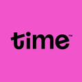

Networking | Datacomm | Automation Solution
Specializing in Metro-E/Enterprise network, automated solutions and Datacommunication technologies.
About Me
Career Summary
IT Project
Technical Expertise

About Me
"Hi everyone, I'm Muhammad Azizul — a Datacom Engineer dedicated in solving network challenges through automation, scripting, and smart infrastructure design.
Always ready to push my limit and find better ways to work!"
Career Summary

TNB - INTERNSHIP STUDENT
JUN 2019 – AUG 2019
- Joined 3 different technical department which are Fault Finder, SAVR (Sesalur Atas Voltan Rendah) and substation.
- Carried out technical tasks for each department.

HW - NETWORK ENGINEER
OCT 2020 – OCT 2022
- TM Stellar Delivery Project - commissioning Huawei switches and servers for TM Alpha cloud expansion.
- TM NMS Modernization - migrating thousand of FTTH and MSAN devices from old NMS U2000 to new NMS NCE, leading the team in technical aspect and communication with customer.
- Digi iBeam IPRAN - responsible in topo reengineering, link upgrade, service migration and new Huawei router integration.

TIME - IP ENGINEER
OCT 2022 – PRESENT
- Responsible in provisioning TIME Metro E Enterprise services (Internet Direct, Lease Line, IPVPN, VoIP & IP Transit)
- Carry out TIME MPLS Metro-E troubleshooting and deep dive inside customer requirement regarding service integration.
Key Projects & Achievements
Enterprise VPN Infrastructure
- Designed and implemented secure OpenVPN architecture
- Achieved 99.9% uptime with redundant failover
- Implemented advanced encryption protocols
OpenVPN
Networking
Security
Server Management Automation
- Developed Wake-on-LAN system for remote server management
- Implemented secure packet transmission via VPN
- Reduced manual intervention by 85%
WOL
Automation
Security
Secure Storage Infrastructure
- Architected enterprise-grade backup solution
- Implemented SFTP with advanced security measures
- Achieved zero data loss incidents
OpenSSH
SFTP
Backup
Network Operations Automation
- Created custom automation tools using Python
- Developed VBA solutions for data processing
- Reduced manual tasks by 70%
Python
VBA
Automation
Technical Expertise
Network Infrastructure
- VPN Configuration
- Network Security
- Routing & Switching
- Firewall Management
Automation & Scripting
- Python
- PowerShell
- Bash Scripting
- Excel VBA
Security
- OpenVPN
- SSL/TLS
- Encryption
- Access Control
Let's Connect
Looking for a network engineer who can bring stability, automation, and innovation to your network infrastructure? Let's discuss how I can contribute to your team.